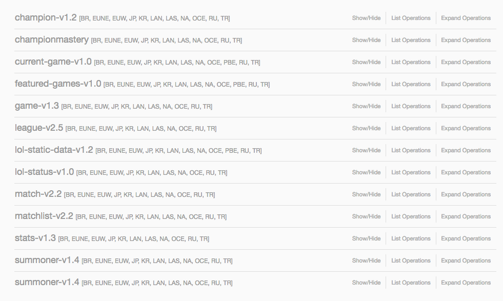

Intro
What is the RIOT API and how can we use it?
Retrieve Your Data
Since 2014 Riot has been kind enough to make accessible the data from every game of League of Legends you play. As a way to help you access this data Riot created a public APIor Application Programming Interface. Think of an API as a set of doors that help guide a user to specific areas to retrieve data. Enough talk! Let's head over to the RIOT API to show you what it is.
Full API Reference
Riot provides a pretty excellent graphical interface for using their API. Each of these links (called endpoints) can be used to retrieve different information. If you haven't used the RIOT API before, spend a little time going through this and seeing what data Riot provides for you to use.
What this guide will be teaching you is how to move away from the graphical user interface. As cool as the Riot API GUI is, it severely limits our ability to extract our data. What if you wanted to get your KDA on every game you have played on your main? Individually inputting hundreds of API calls and going through the data would take forever. Instead we are going to use AJAX to make client-side calls that automate this process allowing us to retrieve our data all at once.